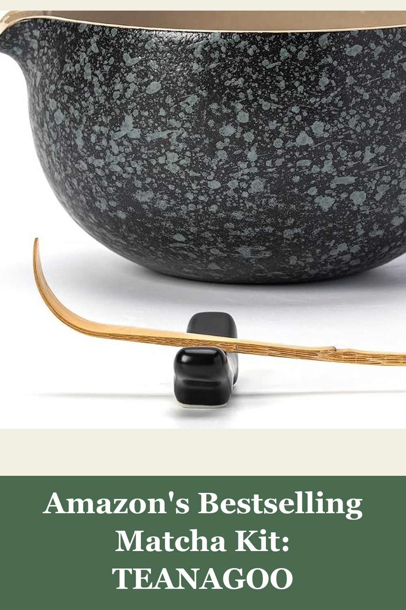
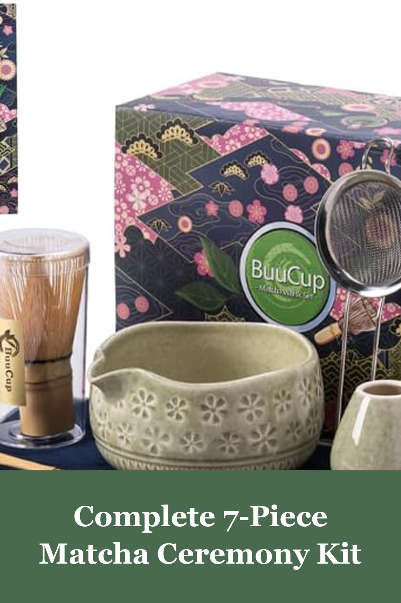
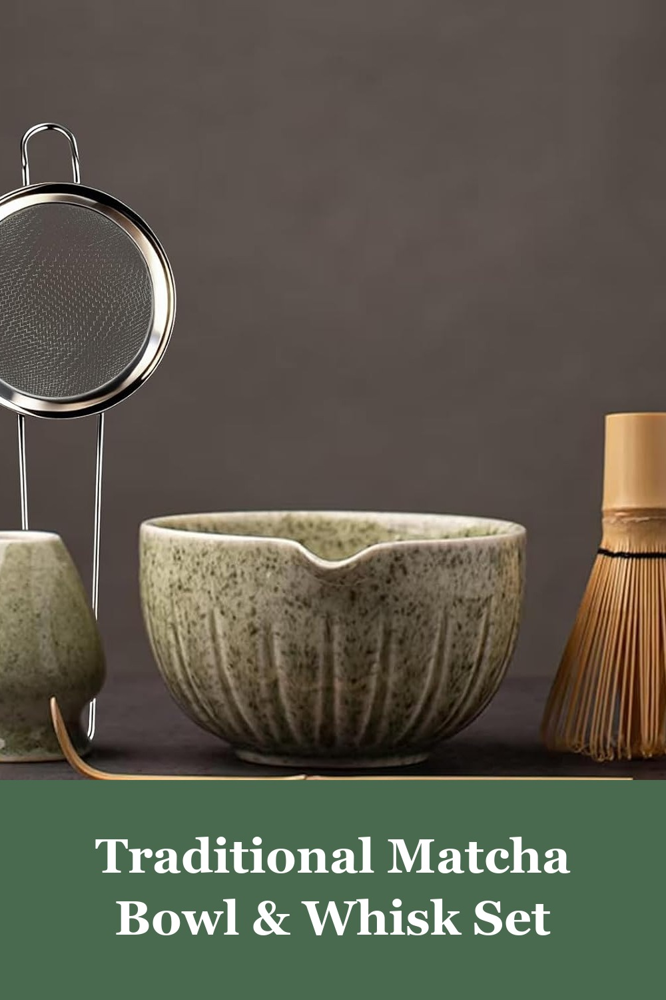

TEANAGOO Matcha Whisk Set Black, 7 Pcs Matcha Set, Matcha Kit for Ceremony
The best-selling matcha whisk set on Amazon, with nearly 3,000 reviews — a complete 7-piece kit with ceramic bowl, bamboo whisk, holder, and scoop to make cafe-quality matcha at home.
I'm so happy I purchased this 7-piece matcha whisk set. As someone who's fairly new to preparing matcha the traditional way, this set made it super easy to get started and feel like I was doing it right. The bamboo whisk creates a beautiful froth when whisking, and the ceramic bowl has a nice weight and shape that feels great in the hands.— verified Amazon buyer
View on Amazon →
Buucup Matcha Whisk Set, Ceramic Matcha Kit Set with Bowl & Tools, Green
Buucup's 7-piece set includes a ceramic bowl, bamboo whisk, scoop, holder, rest, sifter, and tea towel — everything you need for an authentic matcha ritual at home.
I've purchased this many times for myself and as gifts for others! It comes with everything you need as a beginner and makes the matcha process awesome! Great quality and instructions on maintaining the set!— verified Amazon buyer
View on Amazon →
TANG PIN Matcha Set - Matcha Bowl and Whisk, 15 OZ Matcha Whisk Set
TANG PIN's 5-piece matcha kit pairs a generous 15oz ceramic bowl with a bamboo whisk, scoop, and chasen holder — a beautiful, budget-friendly way to start a daily matcha ritual.
The TANG PIN Matcha Set is absolutely stunning and functional — perfect for anyone who loves traditional matcha preparation or wants to start making it at home. The bamboo whisk creates a perfect frothy texture, and the scoop measures out just the right amount of matcha every time. Everything feels carefully crafted and easy to clean.— verified Amazon buyer
View on Amazon →